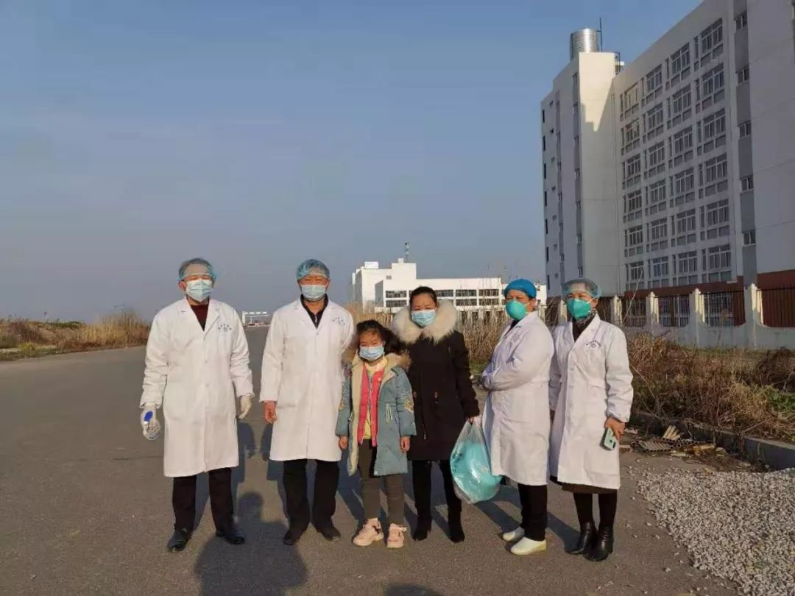
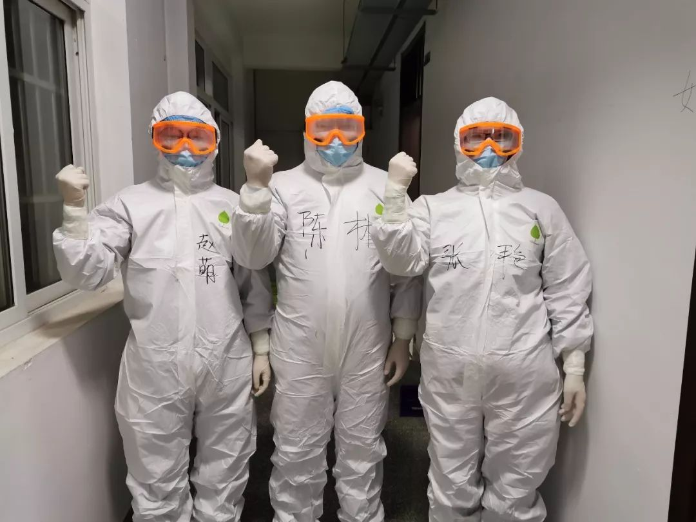

鄂州战“疫”：百名离退休医护人员重返一线
原文链接 备份链接 ********** *****从地图上看，鄂州被武汉、黄冈、黄石“包围”，它的面积只有1594平方公里，是湖北省面积最小的地级市，但因武汉、黄冈是湖北疫情最为严重的两个地区，鄂州的疫情也比较严峻。***** 2月8 …

我也是个普通人，也会恐惧。但我是一名医务工作者，同时是一名党员；我们黄冈的疫情是全国城市里除武汉之外最重的几个之一，这样的困难情况下，我们不去，谁去？必须要坚持，一定要挺住。
口述 | 陈 林
整理 | 王 煜
我是湖北省黄冈市黄州区脑血管病医院神经内科的医生，目前的岗位在黄州区的一个防控新冠肺炎疫情的集中隔离点。
截至2月10日，黄冈是新冠肺炎确诊人数仅次于武汉和孝感的城市，而累计死亡人数已经超过孝感。
腊月二十六（2020年1月20日）的时候，医院就通知了我们全体医护人员取消休假，准备投入到抗击疫情的工作中去。除夕（1月24日）我和家人一起吃了团圆饭，第二天一早就到医院值班。
年初三（2月1日）的时候，我们医院征集去隔离点工作的医护人员志愿者，我马上报了名。我们工作的隔离点是从一家中职学校的宿舍楼改造来的，收治的是还未确诊的疑似病例和与确诊病例有过密切接触的人员，总共有70多张床位，这些天以来基本上都是满的。现在整个黄州区大约建了有二十几个这样的隔离点。

黄冈市黄州区脑血管病医院的人员在开赴隔离点之前的合影
在隔离点，我们医护人员的任务有这么几大项：一是保证收治进来的人员在他们每个人的单间妥善隔离。二是针对患者已经出现的发热等症状给予治疗；以及有些人除了新冠肺炎的疑似症状之外，还有一些其他的基础病症，也需要我们的治疗。三是如果有人确认为新冠肺炎病例，就要统一转移到大别山区域医疗中心去治疗，我们要协助他们的转诊。
另外，我们还要照顾他们的饮食等生活起居，以及给他们做心理疏导。有些人不是自己愿意来，是社区报告之后被送过来的，他们会抱怨：“我现在什么症状也没有，为什么要把我关在这里？”有的人在这里待了几天后，觉得很枯燥，规定的隔离期没满就想要出去。遇到这样的情况，我们都耐心地劝说开导他们，跟他们多说说，很多人还是能理解的。
我们现在是一天四班倒，每个人每天负责6个小时。我前一天是负责晚上7点到凌晨1点的时段，接下来要负责凌晨1点到早上7点。加上穿脱防护服和交接班的时间，我每天至少有7个小时，在隔离点上班是不吃不喝不上厕所的。人在防护服里特别闷热，护目镜容易起雾视线不清；我们这个隔离点没有电梯，经常需要楼上楼下奔走；工作量还是挺大的。
在这几个小时里，我们一直戴着口罩和护目镜等，勒得很痛，同事之间开玩笑说“感觉好像耳朵都要被勒掉了”。医院给我们在隔离点边上找了个宾馆，我下了班之后就去宾馆休息，第二天再接着来。

陈林在隔离点工作中
从到隔离点上班直到现在，我感觉一般的医疗物资是够用的，每天我们医院的工作人员会清点物资，如果发现不够了就会向有关部门报告申请。感觉上就是防护服不是太多，但我们目前也都能用上。我们每个医护人员也都很节约物资，尽全力一个班次就用一套防护装备，不增加物资负担。
这样的工作已经连续十几天了，我觉得对我们医护人员的生理和心理都是很大的考验。医院领导一直嘱咐我们吃好休息好，也保证了我们的伙食供应。我觉得，在每次上班前做好准备，我才不到四十岁，能扛住。
我也是个普通人，也会恐惧。我们隔离点曾经集中确诊一批20多个新冠肺炎患者，那样的情况，说心里不怕是假的。但我是一名医务工作者，同时是一名党员；我们黄冈的疫情是全国城市里除武汉之外最重的几个之一，这样的困难情况下，我们不去，谁去？必须要坚持，一定要挺住。
前几天看到李文亮医生去世的消息，我很痛心，但并没有因此感到更害怕，而是感到自己有了更多的力量要去努力工作对抗疫情。就像在战斗中，看见身边的战友倒下，我就更要坚持下去，全力把这场仗打赢。
我们隔离点有个九岁的小姑娘，一个人待在里面，没有家里的大人陪她。她很可怜也很乖。我和同事们在交好班之后，每天都会去看她，跟她说说话，特别关照她。幸运的是，她经过两次核酸检测都是阴性，也没有发热，可以解除隔离安心出去了。她离开的那天，我们同事几个一起送她回家。

陈林和同事们送解除隔离的小姑娘回家
看到那个小姑娘，我也想起我自己的女儿、我的家人。我已经十几天没回过家了，其实在隔离点怎么累都没什么，我就是挺想家人的。我妻子和我在同一家医院工作，她的岗位在检验部门。前些天一个老年患者隐瞒自己的发热症状，来我妻子的部门做颅内供血的检查，结果后来被确诊为新冠肺炎；我妻子当时和那个患者有过密切接触，因此马上也被隔离观察，目前已经隔离了一星期多了。这样一来，家里就只有我的妈妈一个人带着我的两个孩子，大娃女儿12岁，二娃儿子才一岁多。
我现在基本也只能跟孩子们视频说说话了。儿子在除夕的时候还不会叫爸爸，这些天他可能是想我了，加上他姐姐每天在家里教他，最近一次视频里他都会叫我了，我挺高兴的。前两天下班后，我想见见女儿，就跑到自家楼下，也不敢上楼进家门去，怕自己有潜在的感染风险会传染他们。女儿在5楼的阳台上，我俩就这么隔空喊了几句话：
“
在家乖不乖啊？
乖！
弟弟睡着了吗？
睡着了。
在家要听奶奶的话，知道吗？
知道了！
说完，我就匆匆地走了。

陈林和同事们
我希望疫情能早些结束，我就能回家和孩子们一起了。不光是我们医护人员，隔离点的后勤人员、志愿者、警察，还有在抗击疫情的很多人，大家都很辛苦很不容易。希望大家都可以早些回家。
以上图片均由陈林提供

征集令
《新民周刊》现面向全国征集新冠肺炎采访对象和真实故事：
如果你是参与抗击新冠肺炎疫情的医护人员或其家属，我们希望聆听你的“战疫”故事，也希望传达你的诉求。
如果你是确诊、疑似患者本人或家属，我们希望了解你和家人如何“抗疫”的过程，让外界了解你的真实经历。
如果你是疫情严重地区的普通市民，我们希望展现你的乐观，并倾听你所需的帮助。
如果你是公共服务人员或各类捐助者，我们希望看到你的“最美逆行”，记录下你的无私。
……
抗击新冠肺炎疫情，我们诚征对疫情了解的社会各界人士，提供相关线索，说出你的故事，让我们用新闻留存这一切。
《新民周刊》新冠肺炎线索征集值班编辑联系方式（添加时请简要自我介绍）：
周一：应 琛 微信号：paulineying0127
周二：金 姬 微信号：gepetta
周三：黄 祺 微信号：shewen-2020
周四：周 洁 微信号：asyouasyou
周五：孔冰欣 微信号：kbx875055141
周六：吴 雪 微信号：shyshine1105
周日：姜浩峰 微信号：jianggeladandong
新闻是历史的底稿，你们是历史的见证者。期待你的故事、你的线索！

▼
大家还都在看这些
▼
转载请在评论区留言，获得授权！
转载时，须注明作者、出处和微信号


原文链接 备份链接 ********** *****从地图上看，鄂州被武汉、黄冈、黄石“包围”，它的面积只有1594平方公里，是湖北省面积最小的地级市，但因武汉、黄冈是湖北疫情最为严重的两个地区，鄂州的疫情也比较严峻。***** 2月8 …
原文链接 备份链接 【财新网】（记者 丁捷 综合）大批从事重症医学的医护人员奔赴一线。据国家卫健委，截至2月7日，建立了16个省份支援武汉以外地市的一一对口支援关系，以一省份包一市的方式，全力支持湖北省加强病人的救治工作。驰援武汉的医护 …
原文链接 备份链接 疫情发展 根据丁香医生实时数据，截至 2020 年 2 月 6 日 18 时，全国累计确诊病例 28129 例，疑似病例 24702 例，新增确诊病例 3766 例，新增疑似病例 5328 例。其中，重症病例 3859 …
原文链接 备份链接 【财新网】（记者 张帆）2月3日，首都医科大学附属复兴医院心内科重症监护室出现聚集性病例，确诊9例，其中医护人员5例。北京第一时间披露了相关情况。西城区副区长缪剑虹介绍称，目前相关人员已经转到定点医院治疗，以轻症为 …
原文链接 备份链接 【财新网】（记者 丁捷 黄姝伦 宿慧娴）新型冠状病毒疫情持续升温，新增确诊人数以千位计。截至2月2日24时，全国确诊病例累计17205例，新增确诊病例超过七成集中在湖北省；全国疑似病例累计21558例，追踪到密切接触 …